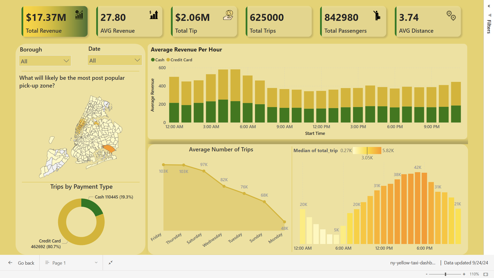

New York City Yellow Trip Stream Processing
This reference architecture shows an end-to-end real-time analytics pipeline utilizing ETL (Extract, Transform, Load) processes. The pipeline will ingest data from a source, perform necessary transformations and computations, and load it into storage for future purposes.
Scenario: A taxi company that has collected yellow taxi trip data in New York City. The dataset includes several fields such as total_amount, dropoff_location, pickup_location, and trip_distance. There is also a lookup file containing boroughs and zones based on location_id. To analyze trip trends in real-time, the company aims to calculate the number of trips, average revenue per hour,... and detect abnormal trips as early as possible.
Overview
The following is the structure of the data pipeline:

Achievements
- Detects abnormal trip durations (e.g., less than 1 minute, more than 2 hours) and identifies discrepancies between the actual and calculated amounts.
- Calculates average revenue and trip counts per hour, categorized by payment type and borough.
- Configures Spark session with optimized parameters, including custom shuffle partitions and broadcast joins for efficient processing.
- Provides a dynamic dashboard for monitoring and analyzing trends each day.
- Efficiently writes large-scale processed streaming data to PostgreSQL in near real-time.
You can download the video in the img/ folder to see the dashboard. Or you can visit this link to view it.

📕 Table Of Contents
The sequence to run the script is: create_table.py -> spark_streaming.py -> kafka_stream.py
⚙️ Local Setup
📂 Dataset
The company has shared with you 3 key datasets for this data.
🚕 New York Yellow Taxi Dataset
The data file is too large to push it to GitHub. Therefore, please press below to download the zip file and extract it to the data/ folder of the project directory. Otherwise, you can place it anywhere you want.
| Field | Description |
|---|---|
| VendorID | A code indicating the TPEP provider that provided the record. 1= Creative Mobile Technologies, LLC; 2= VeriFone Inc. |
| tpep_pickup_datetime | The date and time when the meter was engaged. |
| tpep_dropoff_datetime | The date and time when the meter was disengaged. |
| Passenger_count | The number of passengers in the vehicle. This is a driver-entered value. |
| Trip_distance | The elapsed trip distance in miles reported by the taximeter. |
| PULocationID | TLC Taxi Zone in which the taximeter was engaged. |
| DOLocationID | TLC Taxi Zone in which the taximeter was disengaged. |
| RateCodeID | The final rate code in effect at the end of the trip. 1= Standard rate 2= JFK 3= Newark 4= Nassau or Westchester 5= Negotiated fare 6= Group ride |
| Store_and_fwd_flag | Indicates whether the trip record was held in vehicle memory before sending to the vendor due to no server connection. Y = Store and forward trip N = Not a store and forward trip |
| Payment_type | A numeric code signifying how the passenger paid for the trip. 1= Credit card 2= Cash 3= No charge 4= Dispute 5= Unknown 6= Voided trip |
| Fare_amount | The time-and-distance fare calculated by the meter. |
| Extra | Miscellaneous extras and surcharges, including $0.50 and $1 rush hour and overnight charges. |
| MTA_tax | $0.50 MTA tax automatically triggered based on the metered rate in use. |
| Improvement_surcharge | $0.30 improvement surcharge assessed at flag drop. This began in 2015. |
| Tip_amount | Tip amount. Automatically populated for credit card tips; cash tips are not included. |
| Tolls_amount | Total amount of all tolls paid in trip. |
| Total_amount | The total amount charged to passengers. Does not include cash tips. |
| Congestion_Surcharge | Total amount collected in trip for NYS congestion surcharge. |
| Airport_fee | $1.25 for pick up only at LaGuardia and John F. Kennedy Airports. |
🔍 Taxi Zone Lookup Table
This data is used to support the development of dashboard analyses in Power BI.**
🗺️ Taxi Zone Shapefile
This data is used to support the development of dashboard analyses in Power BI.
Prerequisites
- Install Docker for running Kafka
- Install JDK
- Install Spark
- Install Python
- Install PostgreSQL
Apache Spark is only compatible with Java 8, Java 11, or Java 17.
# Clone the repository
git clone https://github.com/lnynhi02/Data-Pipeline-Project.git
Here is the overall structure of the project:
Root Directory
|
├── data
│ ├── yellow_tripdata_2024.csv
│ ├── taxi_zone_lookup.csv
│ ├── taxi_zone_shapefile
│ └── index.txt
│
├── config
│ └── config.ini
│
├── src
│ ├── create_table.py
│ ├── kafka_stream.py
│ └── spark_streaming.py
│
├── tmp
│ ├── sql_warehouse
│ ├── local_dir
│ └── checkpoint
│ ├── abnormal_duration
│ ├── abnormal_fee
│ ├── avg_duration
│ ├── avg_revenue
│ ├── raw_data
│ └── trip_count
│
└── docker-compose.yaml
- The
configdirectory contains aconfig.inifile that includes the configuration of your PostgreSQL database andrequirements.txtincludes all the essential packages.
💻 Deployment
Postgres Setup
Before setting up our Spark and Airflow configurations, let’s create the Postgres database that will persist our data. I prefer using the pgAdmin 4 tool for this; however, any other Postgres development platform can do the job.
When installing Postgres, you need to set up a password that we will need later to connect to the database from the Spark environment. You must remember the password to reconnect to the database servers. You can also leave the port at 5432.
To create the table and add its columns, we use a script with psycopg2, a PostgreSQL database adapter for Python. We have installed the psycopg2-binary package in the requirements.txt file.
Run the Python script with the following command:
python src/create_table.py
Kafka Setup
To avoid resending messages that have already been processed each time we run the streaming task, we define an index.txt file that records the number of messages sent in the latest streaming session.
The code for the Kafka streaming task can be found in src/kafka_stream.py, which involves extracting data from a CSV file, serving the data to a Kafka topic using a Kafka producer, and updating the numbers in index.txt.
Run the Kafka service defined in the docker-compose.yaml file:
docker-compose up -d
After the services start, visit the Kafka UI at http://localhost:8800/.
Create a topic named yellow_tripdata with:
- Replication factor set to 1
- Partitions set to 10
- Data retention set to a small number.
Spark Setup
The goal of the Spark jobs is to consume the streaming data from the Kafka topic yellow_tripdata and then transfer it to the Postgres tables.
The complete code for the Spark jobs is in the src/spark_streaming.py file.
- Create the Spark Session:
def create_sparksession() -> SparkSession:
spark = SparkSession.builder \
.appName("KafkaToPostgres") \
.config("spark.sql.shuffle.partitions", "9") \
.config("spark.sql.warehouse.dir", "tmp/sql_warehouse") \
.config("spark.local.dir", "tmp/local_dir") \
.getOrCreate()
return spark
- Read Kafka stream and apply schema:
def create_schema(streaming_df):
schema = StructType([
StructField('VendorID', StringType(), True),
StructField('tpep_pickup_datetime', StringType(), True),
StructField('tpep_dropoff_datetime', StringType(), True),
StructField('passenger_count', StringType(), True),
StructField('trip_distance', StringType(), True),
StructField('RatecodeID', StringType(), True),
StructField('store_and_fwd_flag', StringType(), True),
StructField('PULocationID', StringType(), True),
StructField('DOLocationID', StringType(), True),
StructField('payment_type', StringType(), True),
StructField('fare_amount', StringType(), True),
StructField('extra', StringType(), True),
StructField('mta_tax', StringType(), True),
StructField('tip_amount', StringType(), True),
StructField('tolls_amount', StringType(), True),
StructField('improvement_surcharge', StringType(), True),
StructField('total_amount', StringType(), True),
StructField('congestion_surcharge', StringType(), True),
StructField('Airport_fee', StringType(), True)
])
df = streaming_df.selectExpr("CAST(value AS String)")\
.select(from_json(col('value'), schema).alias('data'))\
.select('data.*')
return df
- Run Spark jobs:
$SPARK_HOME/bin/spark-class.cmd org.apache.spark.deploy.master.Master
$SPARK_HOME/sbin/start-master.sh
- Start a Spark worker:
$SPARK_HOME/bin/spark-class.cmd org.apache.spark.deploy.worker.Worker spark://HOST:PORT
$SPARK_HOME/sbin/start-slave.sh spark://HOST:PORT
- Submit Spark jobs:
$YOUR_PROJECT_DIRECTORY/spark-submit \
--master spark://HOST:PORT \
--num-executors 1 \
--executor-memory 5G \
--total-executor-cores 10 \
--packages org.apache.spark:spark-sql-kafka-0-10_2.12:3.5.1,org.postgresql:postgresql:42.5.4,org.apache.kafka:kafka-clients:3.7.0 \
--driver-class-path /path-to-your-jar/postgresql-x.x.x.jar \
src/spark_streaming.py
If there are no errors, you should see successful output in the shell.
Summary
Throughout this guide, we’ve thoroughly examined each component of the pipeline, setting up Kafka for data streaming, from processing data with Spark to storing it in PostgreSQL. The incorporation of Docker simplifies the Kafka setup.
It's important to note that while this setup is ideal for learning and small-scale projects, scaling it for production use would require additional considerations, particularly regarding security and performance optimization. Future enhancements could include integrating advanced data processing techniques,expanding the pipeline to incorporate more complex data sources.
Thank you very much for following along with me. If you have any questions, feel free to inbox me. I hope you enjoy working on the project. Thank you!